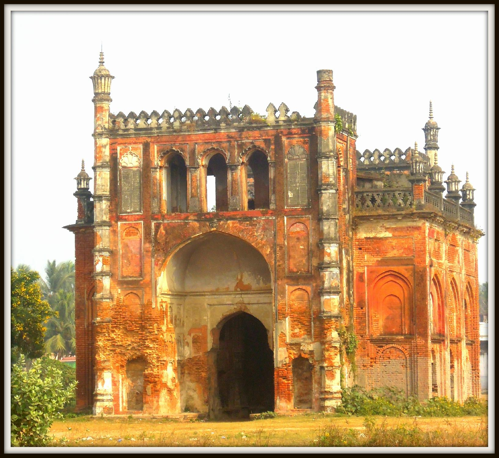

About Nadia
Nadia is known for its deep historical and cultural roots. It was the center of the Nabadwip Hindu cultural movement, which played a crucial role in the development of Vaishnavism in Bengal. The district is famous for its association with Sri Chaitanya Mahaprabhu, a revered saint and religious leader. Festivals like Rash Utsav and Dol Utsav celebrate the life and teachings of Chaitanya Mahaprabhu and attract devotees and tourists from across the country.

